1 Frequency distribution of quantitative variables
Quantitative variables have many unique values, which can lead to an extremely large number of categories.
Therefore, these variables can be summarized by grouping the data into class intervals and counting the number of observations in each class interval.
The class intervals are selected to be contiguous, non-overlapping, and exhaustive in a way that each observation can be assigned to one and only one class interval.
Constructing few class intervals may result in loss of information, while constructing too many class intervals may not satisfy the purpose of summarizing the data.
A rule of thumb is to have between 5 and 15 class intervals.
There are different methods used as a guide to determine the number of class intervals, such as Sturges’ rule, square root method, Freedman-Diaconis’ rule, etc. For instance:
Sturges’ rule: \(k = 1 + 3.322 \log_{10}(n)\), where \(k\) is the number of class intervals and \(n\) is the number of observations.
Example: Consider the variable mpg (miles per gallon) in the mtcars dataset:
First, let’s load the dataset and have a look at the variable:
Click to show/hide code
# load the mtcars datasetdata(mtcars)# display the values of the mpg variablemtcars$mpg
# determine the number of observationsn <-length(mtcars$mpg)# calculate the number of class intervals using Sturges' rule k <-1+3.322*log10(n)paste0('The number of class intervals = ', round(k))
[1] "The number of class intervals = 6"
Click to show/hide code
# use nclass.Sturges() function k1 <-nclass.Sturges(mtcars$mpg)paste0('The number of class intervals = ', round(k1))
[1] "The number of class intervals = 6"
The number of class intervals is 6 as suggested by Sturges’ rule.
Note
These rules including Sturges’ rule are not strict but rather provide guidance to determine the number of class intervals.
The actual number of class intervals can vary based on the researcher’s judgment and the purpose of the analysis.
Then, let’s calculate the range, which is the difference between the maximum and minimum values of the variable:
Click to show/hide code
# determine the minimum value of the mpg variablemin_mpg <-min(mtcars$mpg)# determine the maximum value of the mpg variablemax_mpg <-max(mtcars$mpg)# calculate the range of the mpg variable by subtracting the minimum from the maximumr <- max_mpg - min_mpgpaste0('Range = ', r)
[1] "Range = 23.5"
R has a built-in function range() that returns the maximum and minimum values directly:
Click to show/hide code
range(mtcars$mpg)
[1] 10.4 33.9
The width of each class interval is approximately equal to \(\displaystyle \frac {\text{Range}}{k} = \frac{23.5}{6} = 3.9 \approx 4\).
As a rule of thumb, when appropriate, the width of the class interval is recommended to be of of 5 units, 10 units, or multiples of 10.
The first class interval should encompass the minimum (in this example \(= 10.4\)), while the last class interval should encompass the maximum (in this example \(= 33.9\)).
A good starting point would be \(10\) and considering a width of \(5\) units, the boundaries of the class intervals would be \(10, 15, 20, 25, 30, \text {and}\ 35\).
Because each value should be assigned to one and only one class interval, the class intervals should be closed on one end and open on the other end, e.g., \([10, 15], (15, 20], (20, 25], (25, 30], (30, 35]\).
Note
The square bracket [ ] denotes that the interval includes the corresponding lower or upper bound, while the parenthesis ( ) denotes that the interval excludes the corresponding lower or upper bound.
For instance, the second class interval \((15, 20]\) includes values greater than but not equal to \(15\) and less than or equal to \(20\) (i.e., \(15 < x \leq 20\)).
This type is called exclusive-inclusive (also known as half-open, half-closed) interval.
The first class interval should have a closed lower bound to include the minimum value, if coincidentally the minimum value is equal to the lower bound of the first class interval.
The class interval boundaries (i.e., breakpoints) can also be determined directly using the pretty() function in R:
Click to show/hide code
bp <-pretty(mtcars$mpg)paste0('The class interval breakpoints = ', paste(bp, collapse =", "))
[1] "The class interval breakpoints = 10, 15, 20, 25, 30, 35"
We can use R to create a frequency distribution table for the mpg variable as follows:
Click to show/hide code
library(DT)# create a vector to assign each value to a class intervalmpg_class <-cut( mtcars$mpg,breaks =seq(10, 35, by =5),include.lowest =TRUE,right =TRUE )# include.lowest = TRUE ensures that the minimum value is included in the first class interval or the maximum value is included in the last class interval if right argument is set to FALSE.# right = TRUE ensures that the intervals are left-open and right-closed.# create a frequency distribution table for the mpg variablefreq_tbl_1 <-table(mpg_class)# create a data frame from the frequency tablefreq_tbl_df_1 <-data.frame(freq_tbl_1)# convert the mpg_class column to characterfreq_tbl_df_1$mpg_class <-as.character(freq_tbl_df_1$mpg_class)# add a row for the total frequencyfreq_tbl_df_1 <-rbind( freq_tbl_df_1, c("Total", sum(freq_tbl_df_1$Freq) ) )# display the frequency distribution table (optional)datatable( freq_tbl_df_1,colnames =c("Class Interval"="mpg_class","Frequency"="Freq" ),options =list(dom ="t",columnDefs =list(list(className ="dt-center",targets ="_all" ) ) ),rownames =FALSE)
Table 1: Frequency distribution of the mpg variable
1.1 Relative and cumulative frequencies
Relative frequency of a class interval:
It is the proportion of observations that fall within that class interval relative to the total number of observations.
It is simply calculated by dividing the frequency of that class interval by the total number of observations.
Cumulative frequency:
As the name implies, it is the frequency of values falling within two or more class intervals.
At each class interval, we calculate the sum of the frequency of that class interval and all previous class intervals.
Cumulative relative frequency:
It is calculated by dividing the cumulative frequency by the total number of observations.
Note
The relative frequency, cumulative frequency, and cumulative relative frequency are calculated for categorical variables in the same way as for numerical variables.
The relative frequency, cumulative frequency, and cumulative relative frequency of the mpg variable can be calculated as follows:
The relative frequencies:
Click to show/hide code
# calculate the relative frequencyrel_freq_1 <-prop.table(freq_tbl_1)rel_freq_1
The relative frequency of the class interval \((20, 25] = \displaystyle \frac{8}{32} = 0.25\).
The cumulative frequency at the class interval \((20, 25] = 6 + 12 + 8 = 26\), which represents the number of observations that fall within the wider class interval \([10, 25]\) that incorporates the class intervals \([10, 15]\), \((15, 20]\), and \((20, 25]\).
The cumulative relative frequency at the class interval \((20, 25] = \displaystyle \frac{6}{32} + \frac{12}{32} + \frac{8}{32} = \frac{26}{32} = 0.8125\).
Notice:
The relative frequencies should sum up to 1.
The cumulative relative frequency at the last class interval should be 1.
The above frequency distribution table can constructed directly using freq() function from the summarytools package as follows:
It is a graphical way to display the distribution of quantitative variables.
It can be used when the number of observations is not too large.
It is similar to the histogram (will be discussed shortly) but retains the original data values.
The stem-and-leaf plot is constructed by dividing each observation into two parts, the stem and the leaf separated by a vertical line \((|)\).
Stem:
The stem is the leftmost digit(s) of the observation.
Form a column to the left of the vertical line arranged in ascending order from top to bottom.
Leaf:
The leaf is the rightmost digit(s) of the observation.
They are ordered and placed to the right of the vertical line with the corresponding stem.
Even though R has a bulit in function to create stem-and-leaf plots, the stem.leaf() function from the aplpack package provides more informative output and is more flexible with regard to customization:
Click to show/hide code
library(aplpack)stem.leaf(mtcars$mpg,style ="bare", m =2# number of parts (rows) to which the stem is divided)
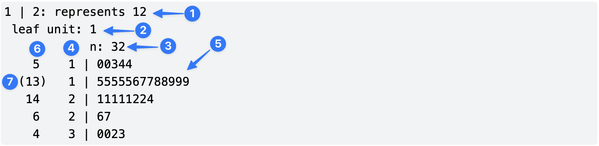
The above output can be interpreted as follows:
This header indicates that stem should be interpreted as tens (or hundreds, etc), whereas leaf should be interpreted as ones not as tenth decimal place (i.e., interpret \(1\ |\ 2\) as \(12\) not \(1.2\)). This can be controlled using the argument unit, which accepts numbers as power of 10 (e.g., 2, 1, 0.1, 0.01, etc).
This shows that the leaf unit is 1 (i.e., the leaf represents the ones place).
This shows the ntotal number of observations.
This column shows the stem values (i.e., the tens place); Each stem is separated into two parts (rows), the first contains leaves from 0 to 4, and the second contains leaves from 5 to 9.
This shows the leaves (i.e., the ones place) corresponding to the stem values.
This column is referred to as the depths, which shows the accumulated frequencies from the top and bottom of the plot until reaching the row that contains the middle value (i.e., the median). So, the last \((5^{\text{th}})\) row has depth of \(4\) because there are \(4\) observations (leaves) with stem value \(3\). The second row from the bottom \((4^{\text{th}})\) has a depth of \(6\) because there are \(4\) leaves in the \(5^{\text{th}}\) row and \(2\) leaves in the \(4^{\text{th}}\) row.
This shows the row containing the middle value (i.e., the median). The frequency of leaves in this row is placed in parentheses to indicate that the median is in this row. For example, the median of the mpg variable is \(19.2\), which is in the \(2^{\text{nd}}\) row that contains \(13\) leaves.
Note
In the above example, the decimals have been omitted from the leaves because the unit argument is set to 1 (i.e., the leaves represent the ones place).
Sometimes, a plus \((+)\) is added at the end of one or more rows to indicate that the leaves exceed the row capacity, and thus, the leaves are not shown in the plot.
1.2.2 Histogram
It is used to graphically represent the distribution of values of quantitative variables, particularly when there are a large number of observations.
It can be used to get insights about the underlying shape of the distribution that generated the data based on the sample.
The class intervals are represented on the horizontal axis, whereas the vertical axis represents the frequency of the values or the relative frequency density scale.
Each class interval on the horizontal axis has a rectangular vertical bar.
If the vertical axis scale is the frequency, the height \((h_i)\) of the bar corresponds to the frequency \((n_i)\) of that class interval (i.e., \(h_i = n_i\)).
If the vertical axis scale is the density, the height of the bar corresponds to relative frequency \(\left ( f_i = \displaystyle \frac{n_i}{\sum n_i} \right)\) of that class interval divided by the width \((d_i)\) of the class interval (i.e., \(h_i = \displaystyle \frac{f_i}{d_i}\)):
Therefore, the area of each bar \(= \text {height} \times \text {width} = \displaystyle \frac{f_i}{\cancel{d_i}} \times \cancel{d}_i = f_i\) (i.e., the relative frequency).
In this context, the bars can have different widths because the area of each bar is proportional to the relative frequency (however, usually the bars have equal width).
The bars are contiguous, non-overlapping, and possess no gaps.
The histogram of the mpg variable can be created as follows:
# adjust the plot layout to display two plots side by sidepar(mfrow=c(1,2))# create a histogram based on frequencyhist(x = mtcars$mpg,main ="Histogram based \n on frequency", # \n is used to create a new linexlab ="Miles per Gallon (MPG)",ylab ="Frequency",col ="skyblue",border ="black",ylim =c(0, 14),)# The breaks were determined automatically but it can be changed using the breaks argument# hist() uses left-open and right-closed intervals by default.# create a histogram based on relative frequencyhist( mtcars$mpg,prob =TRUE, # this is equivalent to freq = FALSEmain ="Histogram based on \n relative frequency",xlab ="Miles per Gallon (MPG)",ylab ="Density",col ="skyblue",border ="black",ylim =c(0, 0.08),)
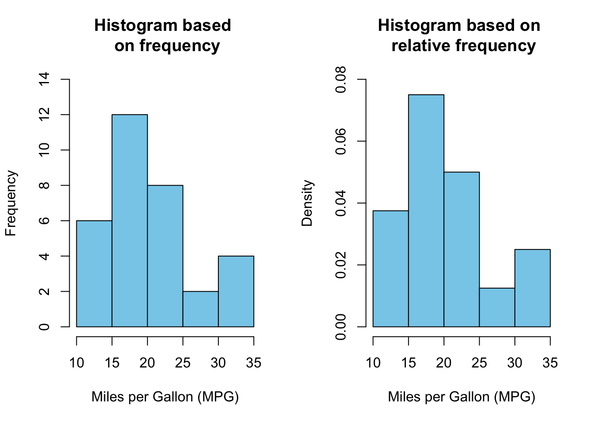
Click to show/hide code
library(ggplot2)# create a histogram based on frequencyh1 <-ggplot( mtcars, aes(x = mpg) ) +# aes() needs x argument onlygeom_histogram(fill ="skyblue",color ="black" ) +labs(title ="Histogram based on frequency",x ="Miles per Gallon (MPG)",y ="Frequency" ) +theme_bw() h1
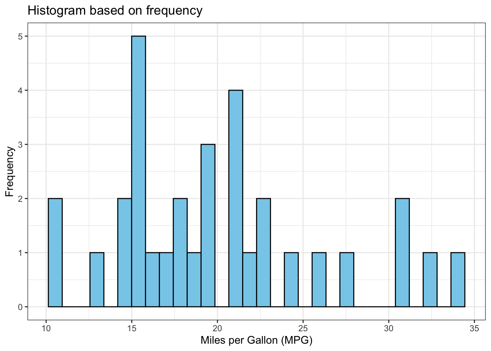
The histogram is different from the base R histogram because ggplot() uses 30 bins (bars) by default, which might not be appropriate all the time.
This can be changed by modifying the bins argument in geom_histogram().
Click to show/hide code
h2 <-ggplot(mtcars, aes(x = mpg)) +geom_histogram(fill ="skyblue",color ="black",bins =5 ) +labs(title ="Histogram based on frequency",x ="Miles per Gallon (MPG)",y ="Frequency" ) +theme_bw() h2
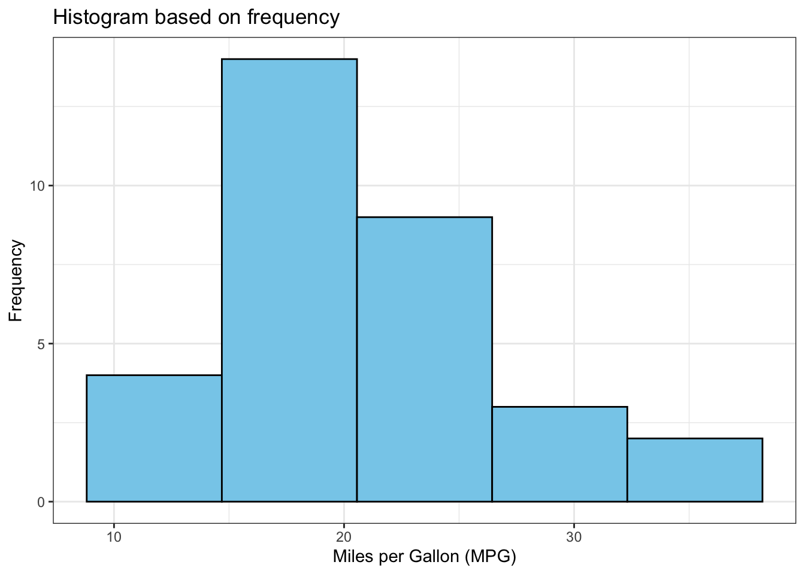
Now, we have 5 bins like the histogram created by base R, however, the ticks on the \(x\)-axis and bin width are different.
We can check the breaks created by ggplot() using the following code:
Click to show/hide code
ggplot_build(h2)$data[[1]]$xmin
[1] 8.8125 14.6875 20.5625 26.4375 32.3125
To get the same breaks as in the base R histogram, we can adjust the arguments binwidth, boundary, and closed in the geom_histogram() as follows
Click to show/hide code
h3 <-ggplot(mtcars, aes(x = mpg)) +geom_histogram(fill ="skyblue",color ="black", binwidth =5, boundary =0,closed ="right" ) +labs(title ="Histogram based on frequency",x ="Miles per Gallon (MPG)",y ="Frequency" ) +scale_y_continuous(breaks =seq(0, 14, by =2),limits =c(0, 14),expand =c(0, 0) ) +theme_bw() +theme(plot.title =element_text(hjust =0.5) )h3
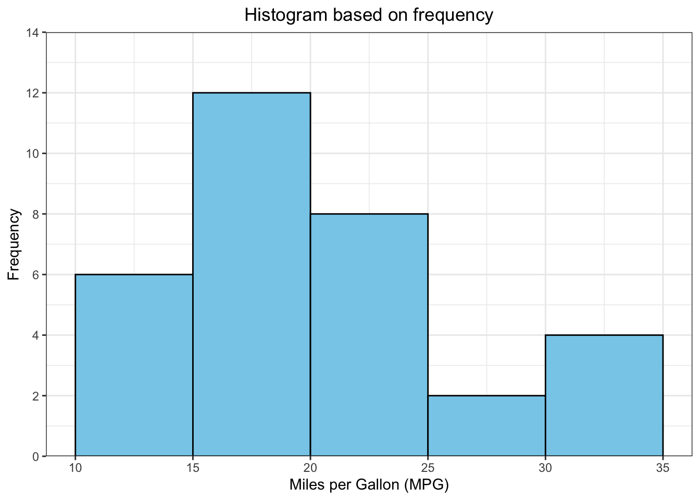
The histogram based on relative frequency can be created as follows:
Click to show/hide code
# histogram based on relative frequency using after_stat(density) as argument insides aes() h4 <-ggplot(mtcars, aes(x = mpg, after_stat(density))) +geom_histogram(fill ="skyblue",color ="black", binwidth =5, boundary =0, closed ="right", ) +labs(title ="Histogram based on \n relative frequency",x ="Miles per Gallon (MPG)",y ="Desnsity" ) +scale_y_continuous(limits =c(0, 0.08),expand =c(0, 0) ) +theme_bw() +theme(plot.title =element_text(hjust =0.5) )h4
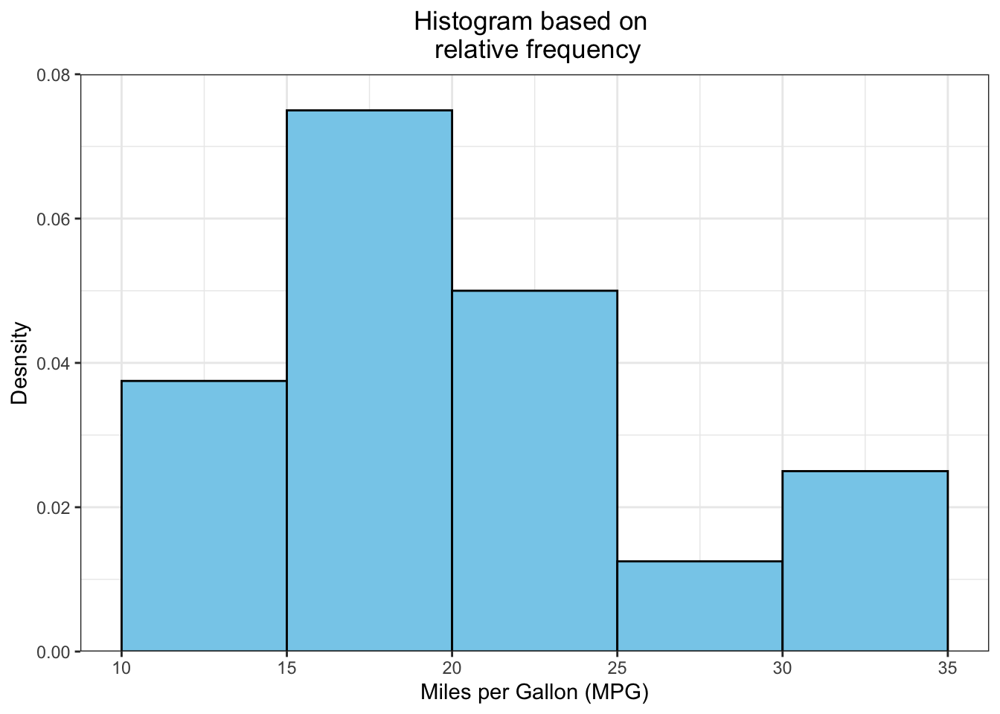
Display both histograms side by side:
Click to show/hide code
library(patchwork)h3 + h4
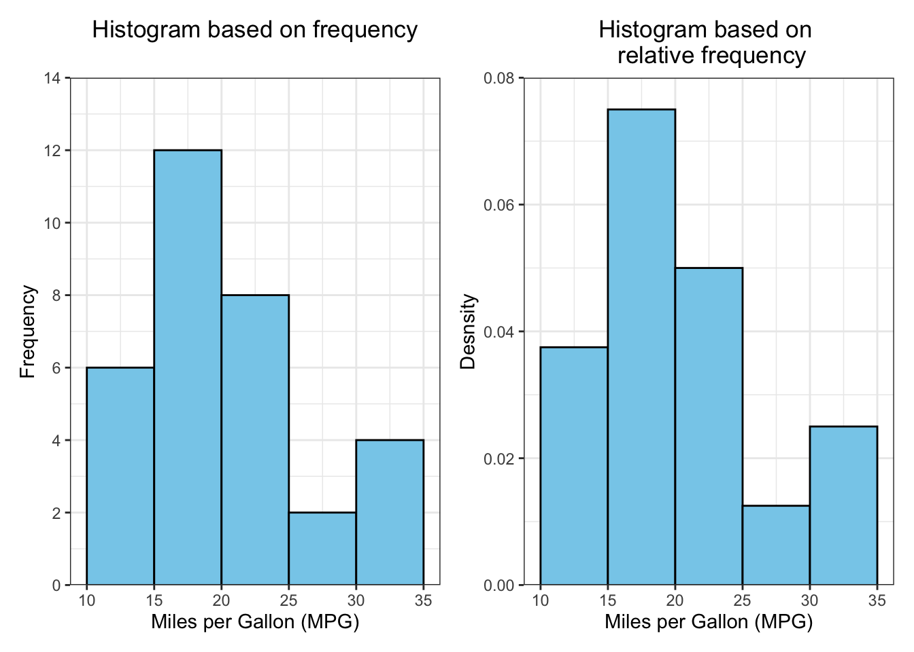
1.2.3 Kernel density plot
The histogram has a disadvantage in that the shape of the distribution is influenced by the choice of the number of class intervals (i.e., bins). Different bin sizes can give a different impression of the underlying distribution.
This problem can be addressed by using the kernel density plot, which is a smoothed version of the histogram and less sensitive to the choice of the number of bins:
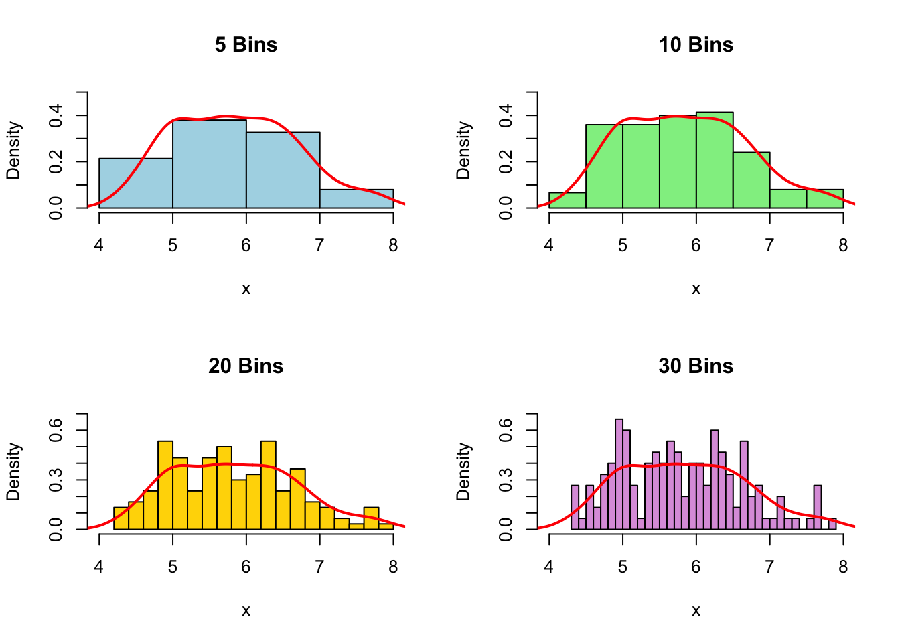
Using the kernel density plot, the shape of the distribution is represented by a continuous function (i.e., curve) estimated from the sample data.
Like histograms, the density plots give insights about the underlying shape of the distribution that generated the data based on the sample.
In simple words, the kernel density estimation (KDE) is based on the idea that the more data points are clustered together, the higher is the probability density in that region (i.e., the higher is the probability of an observation falling in that region):
KDE places a small kernel (bump) centered at each data point.
The density of the bump is highest at the data points and decreases by moving away from the data points.
The small kernels (bumps) are summed to estimate the overall density at each point.
Assume the following set of data: \(5, 6, 7, 8, 11, 12\):
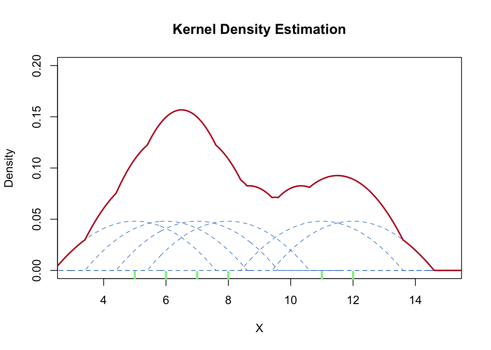
In the above density plot:
The dashed blue lines represent the small bumps (kernel functions) centered at each data point.
The solid red line represents the overall kernel density estimate.
The green tickmarks at the bottom of the plot represent the data points.
The small bumps are summed to estimate the overall density.
The overall desnsity is highest between 5 and 8 because more data points are clustered in that region.
The kernel function used for the estimation is given by:
\(\hat f_n(x)\) is the kernel density estimate at \(x\)
\(n\) is the number of observations
\(h\) is the bandwidth, \(h > 0\)
\(\displaystyle K \left( \frac{x - x_i}{h} \right)\) is the kernel function (mentioned below as \(K(u)\), where \(u = \displaystyle \frac{x - x_i}{h}\))
\(x_i\) is the \(i^{\text{th}}\) observation of the data
There are different kernel functions, such as the Gaussian kernel, Epanechnikov kernel, rectangular kernel, etc:
The kernel function integrates to one (this makes the kernel density estimator a probability density function, a concept tha will be discussed in upcoming tutorials).
The kernel density plot for the mpg variable can be created in R as follows :
# create a kernel density plot using the default Gaussian kernelplot(density( mtcars$mpg ),main ="Kernel density plot",xlab ="Miles per Gallon (MPG)",ylab ="Density",col ="#0466c8",lwd =2, ylim =c(0, 0.08))# add a kernel density plot using the Epanechnikov kernel lines(density( mtcars$mpg,kernel ="epanechnikov", ),col ="#e63946",lty ="dashed", lwd =1.5)# add a legendlegend("topleft",legend =c("Gaussian", "Epanechnikov"),col =c("#0466c8", "#e63946"),lty =c("solid", "dashed"),lwd =c(2, 1.5))
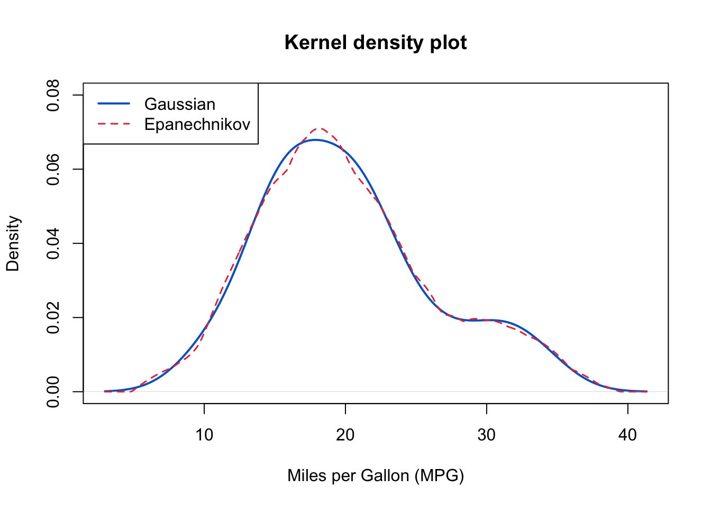
Click to show/hide code
library(ggplot2)# create a kernel density plot using the default Gaussian kernelggplot(data = mtcars, aes(x = mpg)) +# ggplot() accepts only a data framestat_density(aes(color ="Gaussian"), # Label used in the legend kernel ="gaussian", # default kernelgeom ="line",) +stat_density(aes(color ="Epanechnikov"), # Label used in the legendkernel ="epanechnikov",linetype ="dashed",geom ="line",) +labs(title ="Kernel density plot",x ="Miles per Gallon (MPG)",y ="Density", color ="Kernel"# title of legend) +scale_color_manual(values =c("Gaussian"="#0466c8", "Epanechnikov"="#ba181b" ) ) +xlim(2, 40) +theme_bw()
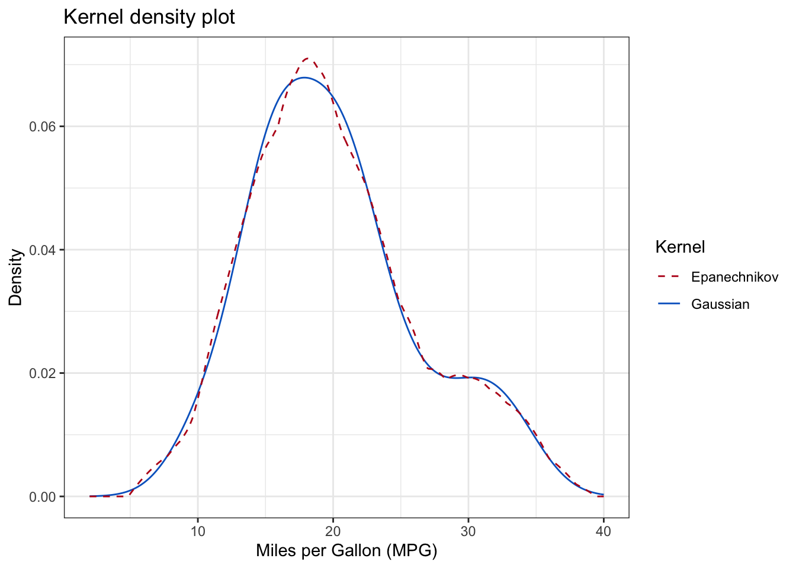
The shape of kernel density plot is affected by the choice of the \(h\)(bandwidth) parameter, which controls the smoothness of the curve:
When \(h\) is too small, the curve becomes wiggly (i.e., undersmoothed) because the bandwidth is too narrow to smooth out random fluctuations in the data (i.e., the density estimate captures noise rather than the true underlying distribution).
When \(h\) is too large, the curve becomes oversmoothed because the wide bandwidth smooths out (i.e., combines) more bumps leading to a density estimate that fails to capture the true underlying distribution.
The bandwidth can be controlled using the bw argument in both density() and stat_density() functions.
This can be illustrated by the following figure:
Click to show/hide code
# plot density with default bandwidth plot(density( mtcars$mpg ),main ="Kernel density plot with different bandwidths",xlab ="Miles per Gallon (MPG)",ylab ="Density",col ="#0466c8",lwd =2, ylim =c(0, 0.1))# add a kernel density plot with a smaller bandwidthlines(density( mtcars$mpg,bw =1 ),col ="#e63946",lwd =2)# add a kernel density plot with a larger bandwidthlines(density( mtcars$mpg,bw =6 ),col ="#38b000",lwd =2)# add a legendlegend("topleft",legend =c("h=default", "h=0.5", "h=3"),col =c("#0466c8", "#e63946", "#38b000"),lwd =c(2, 2, 2))
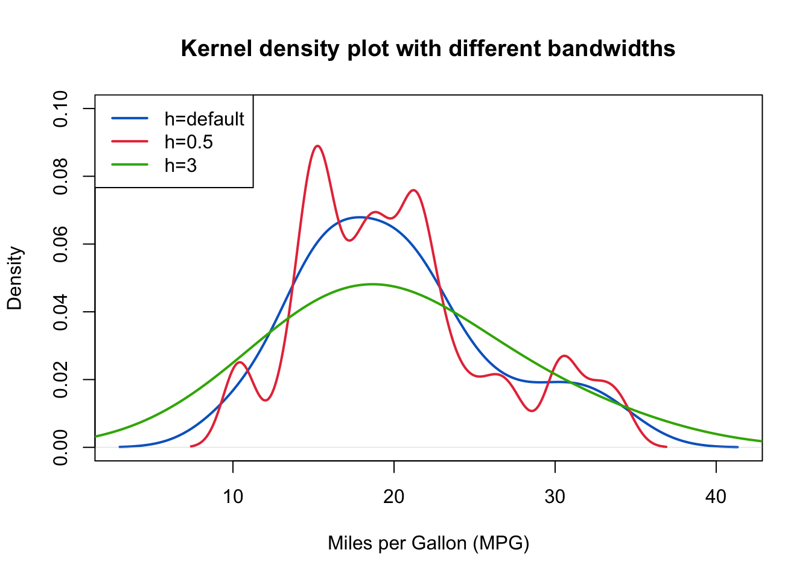
Note
R uses its own algorithm to estimate the density, the following is quoted from the density() function documentation:
“The algorithm used in density.default disperses the mass of the empirical distribution function over a regular grid of at least 512 points and then uses the fast Fourier transform to convolve this approximation with a discretized version of the kernel and then uses linear approximation to evaluate the density at the specified points.”
By default, R calculates the bandwidth using Silverman’s rule of thumb:
where \(\hat \sigma\) is the standard deviation estimated from the sample, \(\text{IQR}\) is the interquartile range, and \(n\) is the number of observations.
The bandwidth (bw) is then multiplied by adjust (default is 1) to get the final bandwidth.
Therefore, modifying the adjust argument can change the bandwidth, e.g., if adjust is set to 0.5, the bandwidth is halved.
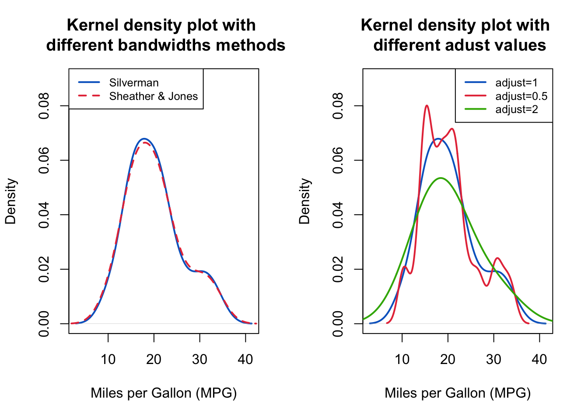
1.3 The shape of the distribution
Histograms and density plots can be used to reveal the distribution of the data.
The shape of the distribution can be symmetric, skewed to the right, or skewed to the left:
Symmetric distribution has a mirror image on both sides of the center.
Right-skewed (positively-skewed) distribution has a long tail to the right (caused by a few large values).
Left-skewed (negatively-skewed) distribution has a long tail to the left (caused by a few small values).
Example of symmetric, right-skewed, and left-skewed distributions are presented below:
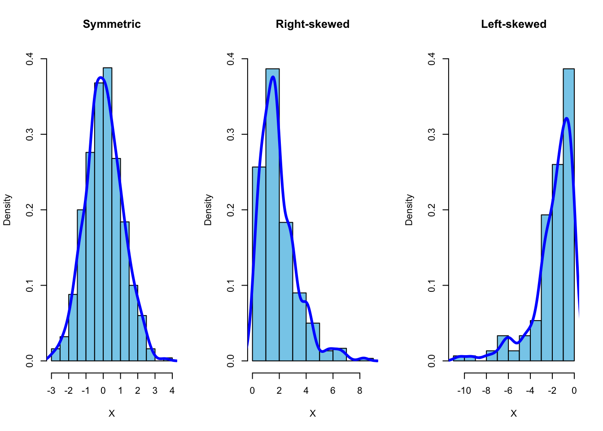
There are other types of graphical representations that can be used to display the distribution of data, such as box plots, violin plots, and quantile-quantile plots, which will be discussed in upcoming tutorials.
Make a histogram and a stem-and-leaf plot for the thickness variable of the melanoma data set.
A. What is the shape of the distribution
B. Using the stem-and-leaf plot, which of the following intervals contains the median of the thickness variable?
2 References
Chen, Y. (2017). Lecture 7: Density Estimation. University of Washington. Retrieved October 05, 2024, from https://faculty.washington.edu/yenchic/17Sp_403/Lec7-density.pdf
Daniel, W. W. and Cross, C. L. (2013). Biostatistics: A Foundation for Analysis in the Health Sciences, Tenth edition. Wiley
Heumann, C., Schomaker, M., and Shalabh (2022). Introduction to Statistics and Data Analysis: With Exercises, Solutions and Applications in R. Springer
Lane, D. M. et al., (2019). Introduction to Statistics. Online Edition. Retrieved September 14, 2024, from https://openstax.org/details/introduction-statistics